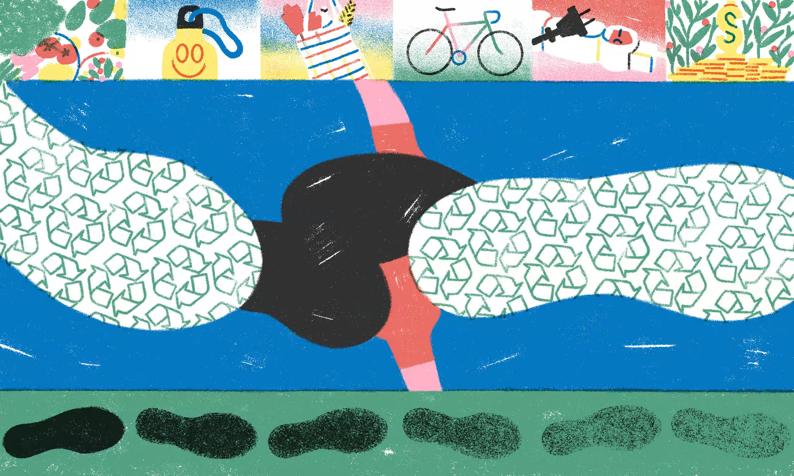

‘Everyone has an impact’: how to start reducing your environmental footprint - The Guardian
Ecological Footprint
- Know that you can make a difference; small things such as walking and biking creates a huge impact
- Reduce, reuse, recycle; purchase items that are long-lasting, has the potential to be reused and can be recycled or donated such as reusable water battles
- Check where your money is going; Think about the impact of purchasing products/services and its impact on the enviorment
- Fast fashion causes huge amounts of cheap clothes in the landfill
- Look at what you're eating; have designated days where you go vegan such as meatless Monday's
- Agriculture accounts for 23% of greenhouse gases and 60% from meat production
- Unplug; reduce the amount of energy usage in your home by unplugging devices when not in use
- Be efficient; Make sure to plan ahead to avoid burning too much gasoline
- Speak up; Share, inform and educate others about ecological footprints
Sustainable Consumption
According to the UN sustainable consumption is about doing more and better with less. It's about separating economic growth from the destruction of the environment, increasing the amount of resources and promoting sustainable lifestyles. Additionally, it is about decreasing the amount of natural resources used and minimizing emissions of pollutants released. We are consuming large amounts of resources and hence exceeding the planet's capacity.
We must change the way we consume because we have been causing environmental destruction and endangering the systems that our future is based on. One change is for governments to put policy into action that can set targets for reducing waste, promoting practices such as reducing, reusing and recycling. Another change is moving to a circular economy which means making products that can be repaired and recycled. Furthermore, another change is for people to adapt to sustainable lifestyles. This includes consuming less, choosing products with lower environmental impact and reducing one’s carbon footprint. Reducing waste and being aware of what you're purchasing and choosing the sustainable options are only a few ways that can make a difference.
Link to article:‘Everyone has an impact’: how to start reducing your environmental footprintLink to article:Goal 12: Ensure sustainable consumption and production patterns
Link to article:Sustainable consumption and production policies